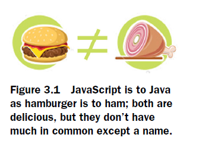
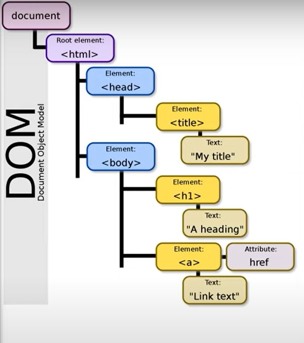

Moving on to JavaScript: The Brain

Programming Paradigms
Functional Programming vs Object Oriented Programming
FP focuses on functions and their inputs and outputs. OOP is based on the principles of encapsulation, inheritance, polymorphism, and abstraction. FP is based on the principles of immutability, referential transparency, higher-order functions, and recursion.
Should we approach Javascript; Object-Oriented or Functional?
Javascript is a functional programming language. The level of the sophistication of
all the code you’ll ever write in JavaScript hinges upon this realization. The single most important weapon to yield from Javascript is understanding functions in depth.
Java on the other hand is a non-functional programming language.
Both Hamburger and Ham have meat in them, likewise both Java and Javascript are programming languages that have a C-influenced syntax.
A FULL-FLEDGED PROGRAMMING LANGUAGE THAT PLAYS WITH OUR WEBSITE?
JavaScript interacts with APIs to send and fetch data from servers through the client side, provide interactivity, updating the web page content and style dynamically, and respond to user actions like clicks, keyboard inputs, mouse movements for a seamless user experience.
This tutorial assumes you have the Basic fundamentals of programming. It doesnt teach you to be a master at vanilla Javascript or dives deep into programming language concepts.
Javscript Notes
Quickly reinforce your understaning of the javascript synxtax in this webpage!!DOM = Document Object Model

Web browser constructs the DOM when it loads an HTML document, and structures all the elements in a tree-like representation. JavaScript can access the DOM to dynamically change the content, structure, and style of a web page.